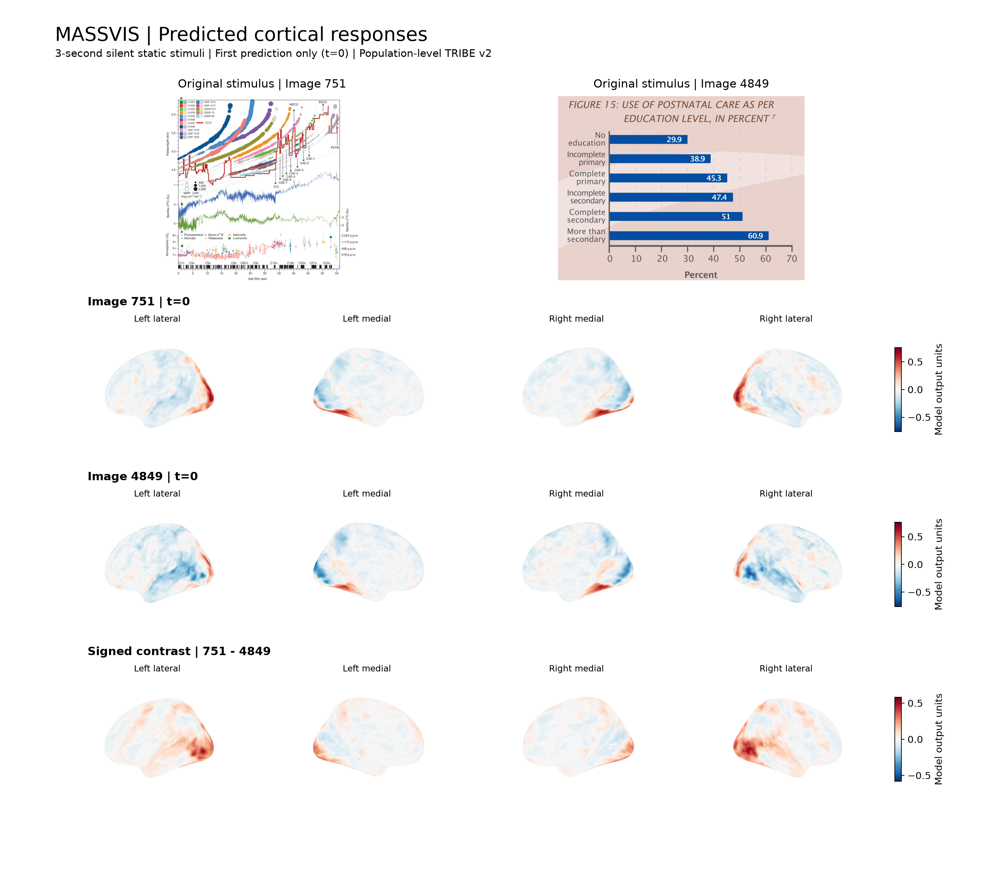
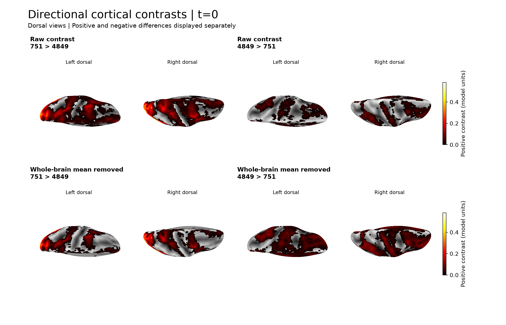

Three-second silent clips, native resolution with even-dimension cropping, first prediction at t=0.


Download neuroimaging report (PDF) | Stimulus-processing comparison table | Protocol and reproduction